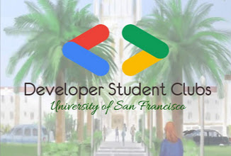
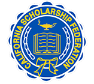
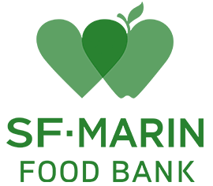

My name is Matthew Chin, and I am a senior student at the University of San Francisco majoring in Mathematics and minoring in Computer Science, and I am expected to graduate in May 2021. After college, I hope to work in big tech in the fields of algorithms, software engineering or development, data science, and machine learning.
I have aspirations to attend graduate school, possibly in business, computer science, or data science, and have proficient knowledge in linear algebra, data structures and algorithms, database development, and customer service troubleshooting. At USF, I am a student help desk technician for their Information Technology Services (ITS), where I troubleshoot basic problems with account logins, software installation, and managing inventory. In today's context with regards to the COVID-19 pandemic, I also respond to clients who may have issues accessing, setting up, or installing and updating to the latest version of Zoom for class meetings, webinars and conferences.
Aside from my work at USF, I have additional work experience. I interned at Carl Zeiss X-Ray Microscopy (XRM) where I developed a proof of concept for an inventory management database system using a barcode language which includes scanning location of items and, if necessary, any changes made. I have tutored middle and high school students in the Spanish language and in Mathematics, ranging from sixth grade math all the way to Pre-Calculus and Calculus.
Active on campus, I serve on the executive board of two tech-oriented clubs: Google Developer Student Clubs and USF's Hackers Club. Respectively, I am the Media and Marketing Chair and Events Coordinator, setting up meetings, maintaining social media accounts, and communicating with other members in promoting interest to bystanders who want to know more of the club. Involved in promoting computer programming and coding through the lens of cybersecurity and Google Developer products including but not limited to Cloud, Firebase, working on the terminal, etc.
Aug 2013 - Jun 2017 Dougherty Valley High School, High School DiplomaI ran cross country and track and field during a majority of my years in high school. For 7.5 of my 8 semesters of high school, I did volunteer work through California Scholarship Federation (CSF), and graduated with high honors academically along with lifetime membership highest honors for the community organization in 2017.
I participated in speech and debate and also played the violin for the school's orchestra. The last two years of high school I was a member of the Computer Science Club. During track and field, my freshman year I earned Coaches Award honors in 2014 and was part of the Men's Varsity Team that won a Diablo-Foothill Athletic League (DFAL) team title in 2016.

I am the Media and Marketing Chair for the University chapter of Google Developer Student Clubs, in partnership with Google Developers.
I encourage student interest in Google products like Google Cloud, Firebase, TensorFlow, and maps, among others, and how to program on the terminal.
I am responsible for managing the club's social media accounts and am the primary source for video production of select meetings and events for those
who choose to participate in DSC events remotely. I make posts and posters and propose suggestions for our club's website developers to add and/or edit content.
I am one of the founding e-board members of this on-campus organization. To learn more about our club or organization, you can visit
our website for more information and if you would like to learn more about gaining practical experience with Google
Developer products.
I am the Events Coordinator for USF Hackers Club. I organize meetings and events and provide helpful sites to gain further interests in cybersecurity. The mission of the club is to encourage users in coding and ethical hacking, also by using a Raspberry Pi.
 Across the Bay Area, I have volunteered at both San Francisco-Marin Food Bank and Second Harvest Food Bank of Silicon Valley. In high school, I participated in California Scholarship Federation (CSF), and received Lifetime Membership Highest Honors after completion of seven-and-a-half semesters of scholarship for service. It is important to give back to those in need while balancing academics and other extracurricular activities.
Email: mattchin813 (at) gmail (dot) com
I respond fastest to emails.